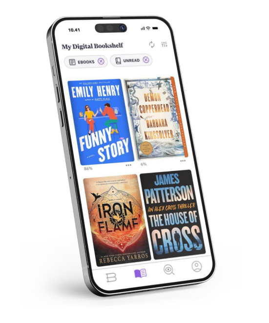
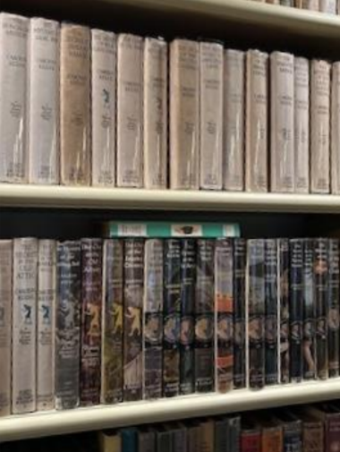
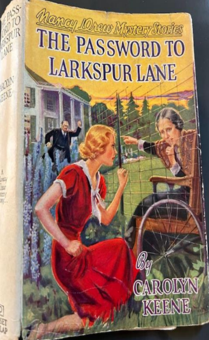
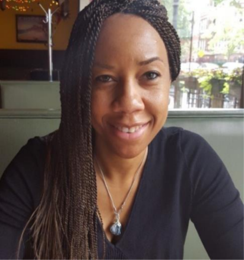
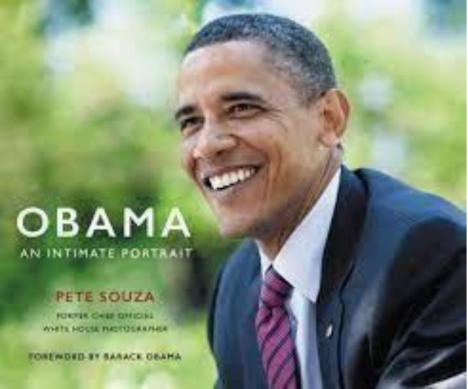
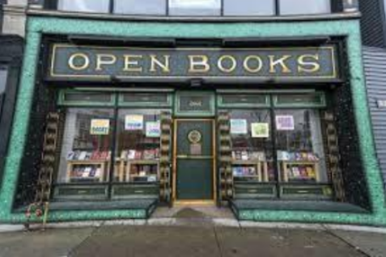

By Elizabeth Dunlop Richter
“A book is a friend I always carry with me.”
Jonathan Boyer
A book is a beautiful thing. Thanks to Gutenberg, we read them, we give them as gifts, we use them to preserve and convey knowledge, we tell stories through them, we collect them. Throwing away a book is as hard as passing up a delicious dessert! A book may have substance, meaning, entertainment value, and prestigious presence on a bookshelf. The fortunate few are able to afford wood-paneled libraries with shelf after shelf of classics, special collections and selected best sellers, accessed with rolling ladders reaching up a dozen or more shelves. Most of us maintain a more modest home library, and many of us also access the public library.
Yet at the same time, some would say that printed books are obsolete. We have e-books, audio books, comic books, not to mention magazines, radio, television, movies, and other media that also tell stories, conveys information, and have value in their own right. What is the future of physical books in the face of technology? What’s their appeal? Are we actually reading them?

The numbers are not encouraging. According to Publishers Weekly, printed book sales in 2022 dropped 6.5% from 2021, 788.7 million units compared to 843.1 million units the previous year. Yet, there is a powerful pull to printed books for many Chicagoans. What is it about holding a book that continues to engage us?
Jim Kinney
Realtor Jim Kinney is an avid reader. “I love to read!” His Facebook page regularly reports on his most recent recommendation. “I only will read a real book and do not do audibles or Kindles. I need to have the touch of the page.” Kinney has several hundred books in his personal library but purges on a regular basis. “I like to pass along books I like to friends…I have made great use of my library card and have saved lots of money.”
Despite Kinney’s devotion to the library, public library attendance nationally has dropped just over 49% in the last ten years. The same forces reducing the reading of printed books are affecting libraries: mobility of and access to information online, ebooks and Kindles, and in the case of libraries, reduced funding which shows no sign of increasing. Just recently, federal funding was slashed when the Trump administration cut grants available from the Institute of Library and Museum Services, one of several agencies deemed “unnecessary” by DOGE.
Lincoln Park Public Library
For serious book collectors, however, owning the book is what matters. For architect Jonathan Boyer, a bookstore has a strong attraction. “There are shelves with books in almost every room in our house,” he reported.
Jonathan Boyer
Boyer loves books as much as buildings. “I collect books on architecture, painting, photography and then fiction, non-fiction – especially novels focused on history. I estimate that we have over 4000 books.” Like Kinney, he appreciates the feel of a printed book. “I like the visceral connection with a book – the smell of the book, the ability to feel a turned page, and I annotate my books: I put a dot in the margin to note a place, a word, a turn of phrase that makes me wonder or enjoy.”
Enjoying a book takes many forms. Serious collectors might focus on a genre, a subject, a century, or an author. For historian and collector Celia Hilliard, who, with her husband David estimates they have thousands of books in their home, there is literary magic in a character many of us first met in middle school, Nancy Drew.
Nancy Drew is a young woman who solves mysteries. She’s the daughter of a lawyer – a widower, who gives her total freedom, a snazzy “roadster” to drive, and wise advice on occasion. The Nancy Drew series was published by Edward Stratemeyer, following his publication of the Hardy Boys books in 1927. He described Nancy as “an up-to-date American girl at her best.”
Celia Hilliard
As a child, Hilliard would be rewarded with a new Nancy Drew book in the Marshall Field’s book department when her mother had completed her shopping. It was in her thirties that Hilliard realized her passion for the books and began collecting. “I started hunting for them in used bookstores. I found a whole string of war time editions… [at a book warehouse] up in Milwaukee with their dust jackets…the dust jackets to me are really all in all. They are so evocative. What I consider the core of my collection are the first 38 books from 1930 to 1961. They were hard cover books with dust jackets.” Hilliard has a total of several hundred including some with alternate jackets on newer editions.

Part of the Hilliard collection of Nancy Drew books

Her favorite book/cover is “The Password to Larkspur Lane.” “You see our heroine whispering to a woman in a wheelchair who is sitting behind barbed wire, and there is a doctor wearing a vest coat who has his arms raised; he’s coming from a very grand looking mansion,” she noted. The doctor turns out to be one of a group of con artists running the nursing home where Drew’s friend is trapped. Drew ultimately manages to disable the criminals’ small plane and stop their escape. “She knows how to do everything,” observes Hilliard, who understands the appeal of the books. “The readers bring a great deal to it…We project parts of ourselves into them.” Does Hilliard read electronic books? “I don’t enjoy that experience at all. There is something about holding a printed book in your hand that is kind of wonderful and much to be preferred.” Would she ever throw away a book? “No. I would feel as if I would be doing something really bad!
Urban agricultural lab assistant Andrea Gilbert shares Hilliard’s inability to throw away a book. “Unless it was horrible…unless I thought this book should not be on the planet, no. Generally, I would feel bad. I respect the artistry and work that goes into creating it …and even if I didn’t get something out of it, somebody might. I would be throwing away knowledge and feel bad about that.’’

Andrea Gilbert
Gilbert also sees herself as a reader but is selective about what books she keeps, maintaining the number of books in her home to a hundred or so. “If there is a book where I like the story, if it’s good enough I pass it along to my nieces to read. In my house, I keep reference books. The e-books are more convenient, but I prefer a printed book. I like holding a printed book. I like the smell of a book. I feel more connected to a book if I’m holding it. Even textbooks, because I’m in school, I want the book where I can use my index finger and move long and find things.” Gilbert appreciates not only the content of her books, but also the cover design. “I even use books as art. Whatever I’m into, I’ll put on the coffee table, and it becomes art. I’m getting a cannabis science degree, so what’s on my coffee table right now is “A Woman’s Guide to Cannabis.” “And it’s pink and girly and cute in the living room. And before that, I had the Obama book made by the photographer Pete Souza… pretty to look at.”

Regional Marketing Leader Susanna Craib-Cox estimates she has more than 400 books stored in bookcases all over her apartment. She’ll add to her collection after asking several questions: “is it a book I have not yet read, is it an author I want to support, is it a good story, is it furthering something I want to know, is it a reference book, is it a cook book, is it an interesting book?”
[When the bookshelves overflow] “I take them to Open Books, or a book swap, or the little free libraries.” She’s happy to use an ebook when it suits her schedule or location. “I really use them both fairly fluidly. It’s quite easy to read books on my tablet (she estimates she has 400-500 books stored), so I will do that when I want ease or a book I won’t come back to.”
Susanna Craib-Cox
Retired journalist Marcia Opp is, like Jim Kinney, a library fan. “I’ve always tried to check out books from the public library because I don’t want to have all of these hundreds and hundreds and thousand of books in our library. But more recently I’ve found that it’s difficult to get any of the books that I want to check out from the library because as soon as the New York Times Sunday edition book review comes out or a Good Read comes out, immediately people sign up for the book and I’m number 70 on the list.”
Marcia Opp
One way to select a book is to be a member of a book club. Chicago is filled with book clubs with themes that range from mysteries to wellness. Opp has belonged to a book club for over 20 years. “We meet ten times a year; it takes me to books I might not pick up in a library or a bookstore. We have paid facilitators, some are professors of English literature, who work with a member of the book club. We try to read Pulitzer or Booker Prize winning books. Primarily fiction. Our bookcases go from waist high up to the ceiling and we have 10 ½ foot ceilings and it’s the length of a room.” When there are just too many, some books do leave her house. “One of our best sources is our church. We have an area where people can donate books…we have kids books and cookbooks.” And like our other readers, Opp would not throw away a book. “I don’t remember doing that. It’s like throwing a Bible away. I would not throw a Bible in the trash either.”
Yes, books are beloved, even sacred, and readers, reluctant to toss a book, are creative about “deaquisitioning” them. Like Craib-Cox, when I need to reduce our book supply, I take a bag-full to Open Books, a nonprofit dedicated to literacy with locations in the West Loop, Pilsen, West Lawndale, and Logan Square. It’s hard to leave without picking up a “new” book or two. For more information about their stores and educational programs, see www.open books.org. So, based on my informal survey, many people not only read printed books but have an emotional connection to the experience. I remain optimistic that the demise of the printed book will slow down, and we will have the problem of too many books on our bookshelves for decades to come.
